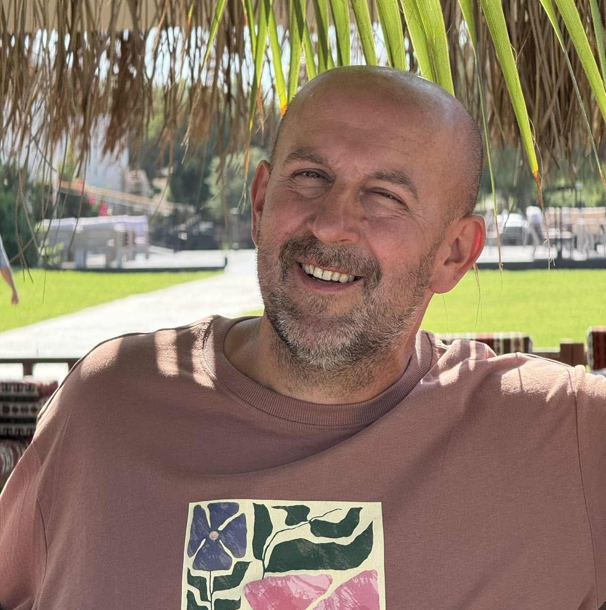

Malarstwo towarzyszy mi od najwcześniejszych lat. Pierwsze kroki w sztuce stawiałem pod czujnym okiem dziadka - malarza samouka, który zaszczepił we mnie miłość do twórczości artystycznej.
W latach szkolnych angażowałem się w różnorodne formy działalności plastycznej: tworzyłem gazetki szkolne, dekoracje świąteczne oraz scenografię do spektakli teatralnych.
Czas służby wojskowej również wypełniłem twórczością - projektowałem tablice informacyjne, tworzyłem dekoracje siedziby garnizonu oraz utrwalałem na płótnie piękno Wałcza i okolicznych krajobrazów.
Przez wiele lat swoje prace prezentowałem w Skansenie w Nowym Sączu, lokalnych galeriach oraz podczas plenerów i imprez kulturalnych organizowanych przez Ośrodek Kultury w Nowym Sączu, gdzie cieszyły się one dużym zainteresowaniem odbiorców.
Przełomowym momentem w mojej drodze artystycznej był rok 2015, kiedy podjąłem studia stacjonarne na PWSZ w Nowym Sączu. Miałem wówczas zaszczyt obcować z wybitnymi osobowościami polskiego świata sztuki - profesorami Karolem Gąsienicą-Szostakiem, Markiem Szymańskim, Krzysztofem Tomalskim, Andrzejem Szarkiem oraz Jakubem Najbartem. W 2017 roku ukończyłem kierunek Edukacja Artystyczna.
Moja twórczość była wielokrotnie nagradzana i wyróżniana. W 2015 roku otrzymałem Nagrodę Dziekana Wydziału Edukacji UKF w Nitrze, a rok później - nagrodę Prodziekana tej samej uczelni. Wyróżnienia obejmowały dziedziny malarstwa, rzeźby, grafiki oraz tkaniny artystycznej.
W swojej pracy artystycznej szczególnie bliskie są mi pejzaże - utrwalam piękno Sądecczyzny, Małopolskiego Szlaku Cerkiewnego, krajobrazów beskidzkich oraz architektury miejskiej.